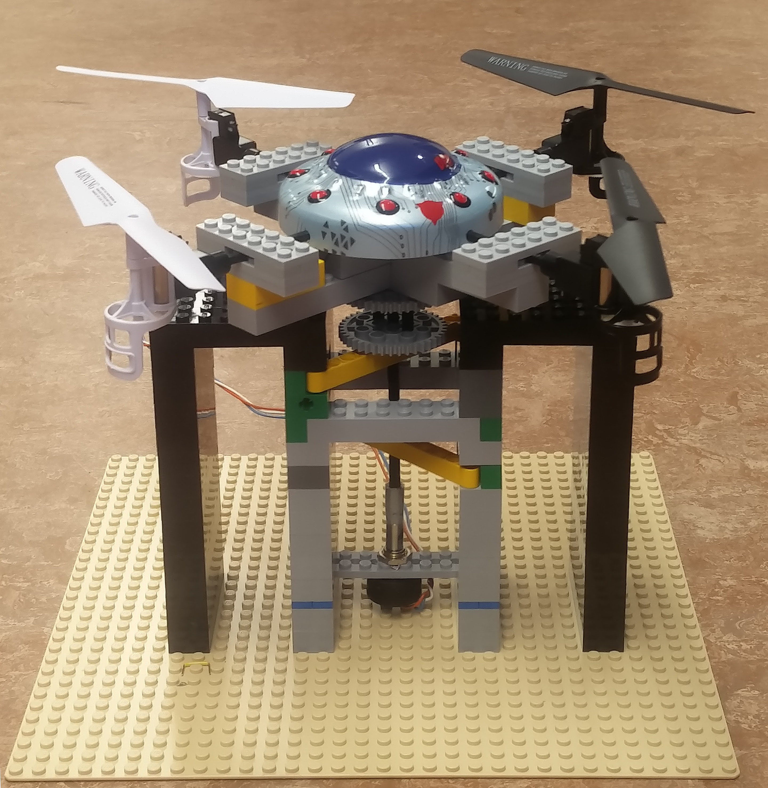
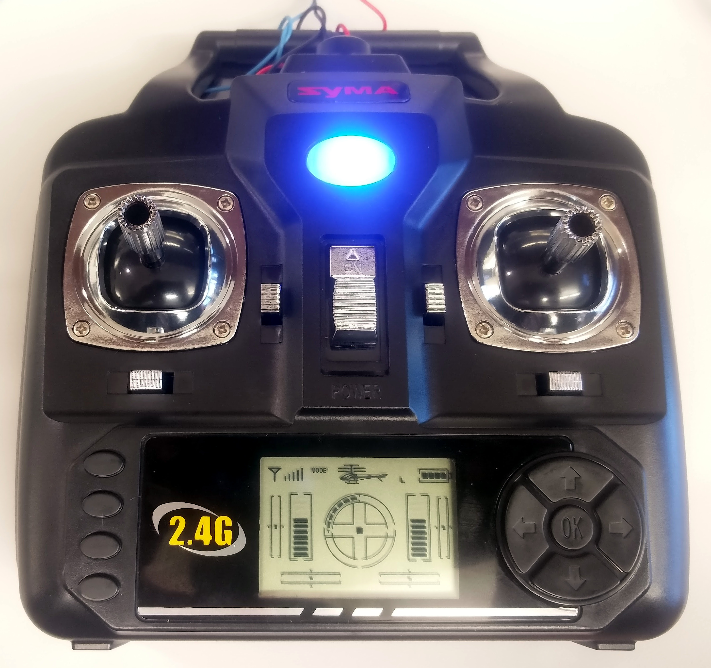
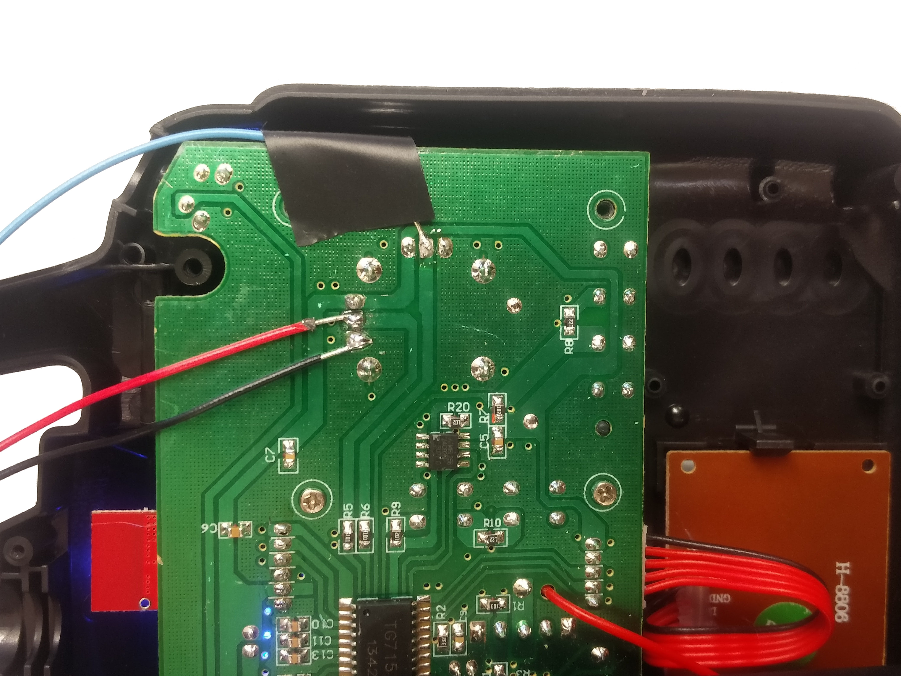

The goal of the lab was to implement a feedback control system to control the yaw, rotation about the vertical axis, of a quadcopter. We supplied a voltage to adjust a remote control's yaw velocity signal and measured the angle of the quadcopter by mounting it on a potentiometer. We were able to reliably adjust the angle and maintain stability by the sole usage of proportional control.
We made a rig out of legos to mount the quadcopter to the potentiometer. When designing our rig, the priorities were to ensure horizontal alignent of the quadcopter, minimize added rotational friction, and ensure a strong coupling between the rotation of the quadcopter and the potentiometer. The quadcopter was mounted by a series of legos and rods to the rotational axel. This rotational axels was supported by multiple moderately tight holes along its length to maintain straightness while not adding too much friction. The end of the rod was heatshrinked to the potentiometer axel.

lego rig with the mounted quadcopter
If you prefer to not use the automatic generator, push a branch named gh-pages to your repository to create a page manually. In addition to supporting regular HTML content, GitHub Pages support Jekyll, a simple, blog aware static site generator. Jekyll makes it easy to create site-wide headers and footers without having to copy them across every page. It also offers intelligent blog support and other advanced templating features.

quadcopter remote control

remote control board with control signal wire
You can @mention a GitHub username to generate a link to their profile. The resulting <a> element will link to the contributor’s GitHub Profile. For example: In 2007, Chris Wanstrath (@defunkt), PJ Hyett (@pjhyett), and Tom Preston-Werner (@mojombo) founded GitHub.
lego rig with the mounted quadcopter
quadcopter remote control
remote control board with control signal wire